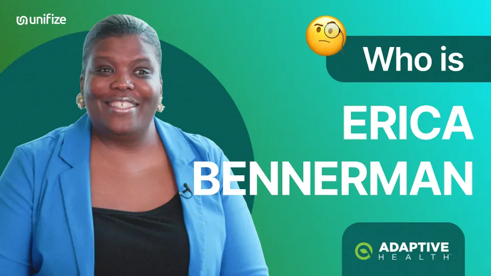
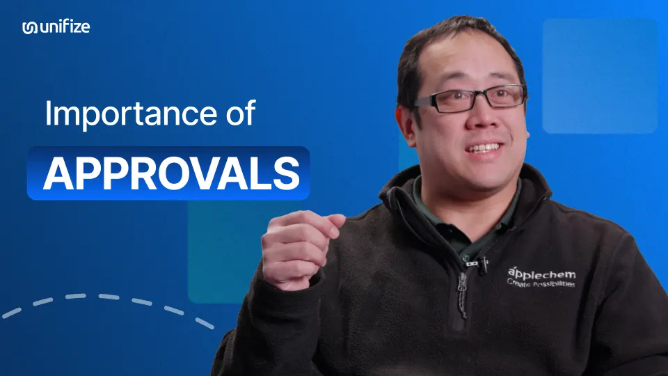

Evidence for the next conversation.
The voices and numbers behind this page.


2:10
Customer stories
In their own words.
Watch the stories
→
Case study
Turning Paper Chaos into Connected Quality
In large-scale construction projects, precision and speed are everything. For Efco, a global leader in steel forming systems, quality was never optional, but the way it was managed was slowing them down. Handwritten remake cards, scattered spreadsheets, and siloed email threads made it hard to track rework, locate certifications, or align three shifts working around the clock. Decisions that should have taken minutes dragged into hours, or days. Efco needed more than digitization. They needed a connected platform where teams could see issues in real time, discuss them in context, and act immediately. That search led them to Unifize. This case study explores how Efco: By replacing paper-driven chaos with a collaborative quality platform, Efco moved from chasing information to using it, freeing teams to focus on building solutions, not searching for them.
Case studies
The backlog, the fix, the result.
Read the case studies
→
Quality strategy
Priced per What?
By Ben Merton
Seat pricing is ending. Every vendor selling machine work now has to say what it counts instead, and in my corner of the market the buyers have already answered.
Blog
Field notes for operating leaders.
Read the field notes
→